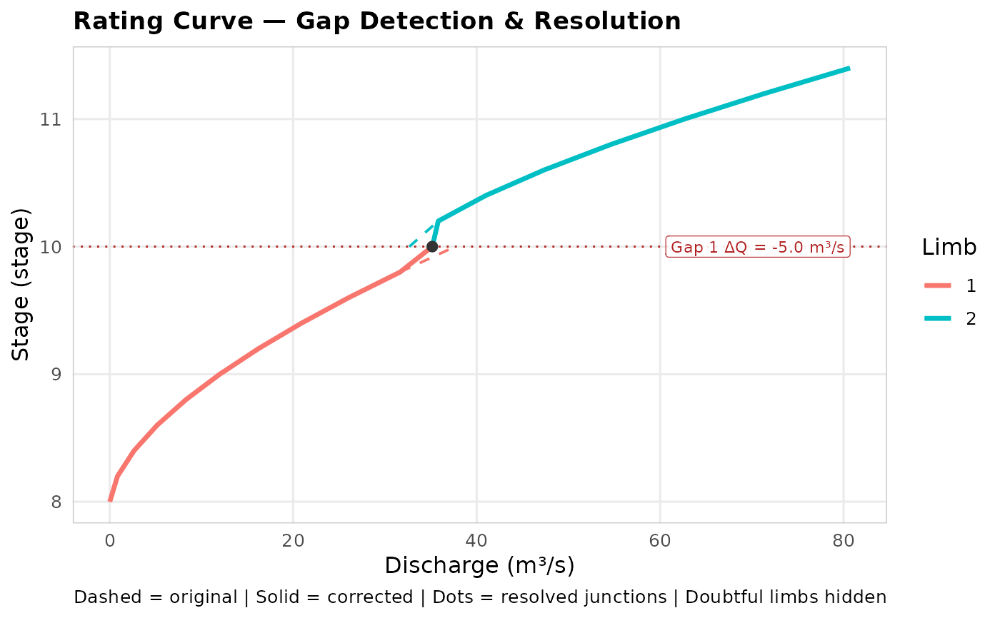

Produces a ggplot2 figure overlaying the original (dashed) and corrected (solid) rating curves. Works for any number of limbs.
The original (Before) curve is drawn as one dashed line per limb, coloured by limb ID, so gaps between independently-fitted segments are visible. The corrected (After) curve is drawn the same way; junction dots bridge the colour seam where adjacent limbs meet post-resolution.
Flagged gap junctions are marked with a dotted horizontal line; labels are pinned to the right margin and staggered vertically so they never overlap the curves or each other. A short segment connects each label back to its junction stage line.
Usage
plot_rc_gaps(
rc_before_dt,
rc_after_dt,
stage_col = "stage",
discharge_col = "discharge",
limb_col = "limb",
doubtful_col = "doubtful"
)Arguments
- rc_before_dt
Data.frame or data.table. The original, uncorrected rating curve passed to
resolve_rc_gaps.- rc_after_dt
Data.frame or data.table. The corrected rating curve returned by
resolve_rc_gaps.- stage_col
Character. Name of the stage column. Default
"stage".- discharge_col
Character. Name of the discharge column. Default
"discharge".- limb_col
Character or
NULL. Name of the limb-ID column. Defaults to"limb"; a single limb is assumed if the column is absent.- doubtful_col
Character. Name of the doubtful flag column (default
"doubtful"). Rows where this column isTRUEare excluded from both the Before and After curves. Ignored if the column is absent fromrc_before_dt/rc_after_dt.
Value
A ggplot object (printed as a side-effect). Returned
invisibly so it can be further modified or saved with
ggsave.
Examples
stage_seq1 <- seq(8.0, 10.0, by = 0.2)
limb1_dt <- data.table::data.table(
stage = stage_seq1,
discharge = 12 * (stage_seq1 - 8.0)^1.65,
limb = 1L
)
stage_seq2 <- seq(10.0, 11.5, by = 0.2)
limb2_dt <- data.table::data.table(
stage = stage_seq2,
discharge = (tail(limb1_dt$discharge, 1) - 5) + 30 * (stage_seq2 - 10.0)^1.4,
limb = 2L
)
rc_raw_dt <- data.table::rbindlist(list(limb1_dt, limb2_dt))
rc_fixed_dt <- resolve_rc_gaps(rc_raw_dt)
#> INFO [2026-09-01 07:30:32] Checked 1 junction(s): 1 gap(s) flagged.
#> INFO [2026-09-01 07:30:32] Junction 1 (limbs 1/2, stage 10): gap 37.66 -> 32.66 | agreed Q = 35.16
p <- plot_rc_gaps(rc_raw_dt, rc_fixed_dt)
#> INFO [2026-09-01 07:30:32] Checked 1 junction(s): 1 gap(s) flagged.

# ggplot2::ggsave("rc_gap_check.png", p, width = 8, height = 6)